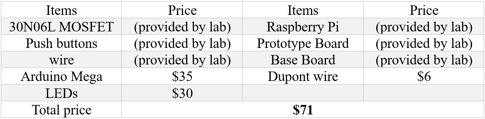

The Snake Game in a 3D LED Cube
by Yibo Yang and Kejia Hu
Demonstration Video
Introduction
Remember the game in which the player controls a snake to eat apples? Here’s a 3D LED version! A 6x6x6 3D LED cube is designed and implemented to run the snake game. The player controls the snake via six push buttons on a Raspberry Pi, which serves as a master device to indicate how the Arduino Mega should drive the 3D LED cube. Come play and try to get the highest score!

Project Breakdown:
- Build the 6x6x6 3D LED cube;
- Design the outer circuits of the cube;
- Write the software logics for Raspberry Pi and Arduino Mega.
The Cube
The soldering part takes the most of our time. We followed the instructions from a website: Led-Cube-8x8x8. The connection of 216 LEDs and the control circuit is shown in Fig. 1. There are 6 layers of LEDs and only 2 planes are shown in the graph to avoid ambiguousness.
Figure 1.The led cube and the control circuit
LED cathodes in the same plane are soldered with each other to form 6 ground planes, as those black lines illustrated in the graph. Every ground plane is connected to the drain of an NMOS. The gate of each NMOS is connected to a GPIO pin on the Arduino Mega, from A0 to A5. The ground is selected by whether it will be grounded or floated. For example, if plane 0 is needed to be selected, A0 would be HIGH while pins A1 to A5 are LOW. LEDs in plane 1 to plane 5 can not be lit up because the ground plane floating, and no current is possible to flow through.
LED Cathodes in the same column are soldered with each other, as those red lines demonstrated in the graph. Only 4 columns are shown in the graph, but there are 36 columns actually. Each column is connected to a GPIO pin on the Mega through a current limiting resistor. We use a 330Ω resistor to limit the current.
Procedures to make the cube:
First, we make a 6x6 template on a wooden board. The shape of each LED is like a hat, thus with a proper hole diameter, the LED will be clipped on the hole, as shown in Fig. 2. The distance between holes is the cathode length minus 1mm overlap, to make our soldering life easier. As shown in Fig. 2, we soldered the cathode legs of LEDs together to accelerate our soldering.
Figure 2.The wooden template for soldering
Then we solder 6 layers of the cube. The procedure is demonstrated in Fig. 3. Each circle represents a LED. Black lines are the cathodes of each LED, and the grey lines are two stripped wires to give the plane more support. After we solder each plane, we test each LED with a voltage source. Fig. 4 demonstrates a finished plane that we soldered.

Figure 3.The soldering schematic of one layer

Figure 4.A finished single layer of 6x6 LEDs
After we had finished 6 layers and tested them, we began vertically soldering. We soldered anodes of LEDs on a column. As shown in Fig. 5, we use two screwdrivers to hold those layers on top of the base layer. After soldering a layer, we will test all the existing LEDs on the cube, as shown in Fig. 6.

Figure 5.Solder two layers together

Figure 6.Column test after each integration soldering
This step took us about 7 hours because 72 pins between two layers need to be overlapped with each other and the solder needs to be very careful. The high-temperature iron could easily damage the LED if the contact time is too long. Although we solder the 6 layers very carefully, there is one LED that does not work. The soldering took us 15 hours in total, which is the most time-consuming part of our project, but it's interesting and destressing as well.
Base Board and Outer Circuits
The final part is to create the baseboard and the circuit between LEDs and Arduino. We use a press drill to drill the base board, as shown in Fig. 7.

Figure 7.Base board of the LED cube
To let the 36 anode columns get through the 36 holes, we used about an hour to align them with each other. After that, we soldered every pin with a Dupont wire and wrapped some tape to insulate them with each other. The connection of the circuit takes us about 2 hours. The connected cube and the prototype board are shown in Fig. 8. The circuit design ideal of us is inspired by Prof. Skovira and Akugbe.

Figure 8.The connected LED cube and the bread board
The Software Part
After we finished the soldering of the cube, we finally started the software part. The Raspberry Pi serves as the master for user interface and sending control signal to the Arduino Mega; the Arduino Mega serves as the slave which drives the LED cube according to the control instructions from the Raspberry Pi. The system overview is shown in Fig. 9.

Figure 9.The system overview
Raspberry Pi master: Raspberry Pi Master has a state machine that has 5 states. The state transaction is shown in Fig. 10. The Raspberry Pi and The Arduino Mega use UART to communicate with each other. The Raspberry Pi uses UART3, corresponding to GPIO 4 for RX and GPIO 5 for TX; the Arduino Mega uses GPIO 10 for RX and GPIO 11 for TX. UART just needs a 3-wire connection (TX, RX, and GND) and some easy setups on either side and then a stable communication port is made between the Raspberry Pi and the Arduino Mega.

Figure 10.The FSM in Raspberry Pi
Main menu: The default state is the Main Menu state. At this state, Raspberry Pi uses UART to send a byte ‘R’ to reset the Arduino. The PiTFT output is shown in Fig. 11.

Figure 11.Main menu
There are 4 buttons in the main menu: “START”, “PLAYER NAME”, “DEMO”, and “QUIT”. By pressing “START” “PLAYER NAME” and “DEMO” on the PiTFT, Raspberry Pi will get to the corresponding mode, as shown in Fig. 10. The function of the mode will be discussed in further sections.
There is also a scoreboard that stores the top 3 player name and their score. We use a text file to store the data, thus the scoreboard will be stored after quitting the game.
Change Name: From the Main menu pressing “PLAYER NAME” on the PiTFT, it will get to the name-changing mode, as shown in Fig. 12.

Figure 12.Change the player's name
As shown in the Fig. 12, 4 push buttons on the PiTFT are used, and they are GPIO 17, 22, 23, 27. The GPIO 27 button is used to delete the entered name. The GPIO 22 button is used to add a new character. GPIO 17 and 23 buttons are used to change the letters in two directions: A to Z and Z to A. After the player presses the Confirm on the screen, the name will be stored. After that, if the player gets a top 3 score, the scoreboard will be updated by the name.
Demo Mode: By pressing the “DEMO” button on the screen in the main menu, the Raspberry Pi will get into the demo mode. It will send a byte ‘D’ to the Arduino and tell it to begin to demo. And there is also output on the PiTFT, as shown in Fig. 13 below.

Figure 13.Raspberry Pi output in demo mode
Playing Mode: By pressing “START” button on the screen, the Raspberry Pi gets into the playing mode. It will send a byte ‘S’ to the Arduino Mega and display the score and current directions on the PiTFT, as shown in Fig. 14 below.

Figure 14.Playing mode
There are 6 push buttons used to control the direction of the snake, as shown in Fig. 15. The left 4 buttons are used to control the snake to change the direction to the 4 directions in a horizontal plane. They are forward, backward, leftward, and rightward. The 2 buttons on the right part of the board are used to control the snake to move vertically up and down. The GPIOs used and their logics are listed in Tab. 1. The default direction of the snake is forward.

Figure 15.6 buttons mode
Table 1.Functions of 6 external push buttons
If these GPIOs are triggered, the Raspberry Pi will send different bytes to the Arduino. Change to Left, send ‘1’. Change to FORWARD, send ‘0’. Change to BACKWARD, send ‘3’. Change to UP, send ‘2’. Change to DOWN, send ‘5’. Change to RIGHT, send ‘4’. In this mode, Raspberry Pi will listen to the UART port, if the received byte is ‘!’, game over. If the received byte is ‘+’, score += 1.
Game Over: In the Game Over state, the output of PiTFT is shown in Fig. 16. The player’s name and the score will be shown on the screen. The default player name is ‘PLAYER’. The score is the number of targets eaten by the snake. There is a “BACK TO MENU” on the PiTFT, if this button is pressed, Raspberry Pi will send a byte ‘R’ to Arduino to make it back to the idle state.

Figure 16.PiTFT output in the Game Over state
Code implementation: The state transition is implemented by a global variable “state”. Whenever the state is needed to be changed, a new value will be assigned to this variable. The main body of the code is a loop and only exits when the state equals 0. State from 1 to 5 represents different states and each state is defined by a function. The basic structure of each function is, firstly display all the desired content to the PiTFT, then check if the serial port receives some bytes. If there are valid bytes, read them and use branch instructions to judge behaviors. If the state transition is needed, change the global variable to the correct value. All the buttons are connected by the GPIO call back.
Arduino Mega Slave: There are 4 states of the MEGA: IDLE, DEMO, PLAY, and GAME OVER, as shown in Fig. 17. In the IDLE mode, there is no LED output. The only thing the Arduino Mega does is to listen to the serial port. If there is an ‘S’ sent by the Raspberry Pi, change to the play mode. If there is a ‘D’, change to demo mode.

Figure 17.The FSM in Arduino Mega
Play Mode: To control the LED individually, we use a bool array led_cube_display[216] to store each LED point. To convert the (x, y, z) coordinate to the index of this cube, we use index = x + 6y + 36z. For example, the led_cube_display[43] represent the state of the LED at (1,1,1). We have set up some helper functions to light up the corresponding column or the plane so that it is no need for us to remember the GPIO port number every time. The GPIO port for the ground plane is shown in Tab. 2 and the GPIO for column control is shown in Tab. 3. GPIO 10 and GPIO 11 are left for UART.

Table 2.GPIO ground plane control

Table 3.GPIO numbers on Arduino Mega of LED anode columns
For the control of the “LED snake”, we defined a snake class. The snake has a head, a body, and even a tail (the usage of this tail will be explained later). Its length and direction are also defined. For convenience, we also defined the apple here. The head, the body, the tail, and the apple are all a struct type of variant—the cube point. The cube point is a simple struct including the coordinates of the three axes—x, y, and z.
The snake’s head, its body, its length, and its direction are initialized from the constructor. The apple will be generated by an apple generator, which simply randomly picks a coordinate in this cube, except for point (3, 3, 2) where we have a bad LED. Then there are two major member functions of this snake class: snake_move and collide_detection. The snake_move firstly saves the last point of the body in the variant ‘tail’. Then move every point of the body to a prior point of the body, and move the snake’s head according to the direction. The tail is saved for the next function: collide_detection. In this function, we first examine whether the snake “eats” the apple, that is, the coordinate of the head is exactly the same as the coordinate of the apple. If so, we add 1 to the snake length, generate a new apple, and make its body longer by adding the tail as the last point of the snake body. The tail simply keeps coordinate of the last point of the body in every move and is only useful when the snake eats an apple. If the snake doesn’t eat an apple, we detect whether it hits the wall or hits its body or not. If so, the game is over and the FSM state changes. If nothing happens, this function returns and the game goes on.
The default moving direction is forward, and the default snake length is 2. If the snake eats an apple, Mega will send a byte ‘+’ to the Raspberry Pi and the length will be plus 1. If the snake hits the wall or its own body, it will send ‘!’ to the Raspberry Pi and go to GAME OVER state.
Since there are so much logics needs to be finished, it is very important to decouple those functions from each other. We have appended our code at the end of this website.
Demo Mode: In this mode, a flying bird is displayed. It looks very cool, but it’s just groups of points that follow an up-and-down moving pattern, and between the groups, there is a constant phase difference. The diagonal center group moves first, and the group by its side moves one layer slower than the center group. One group further from the diagonal center, one layer slow it moves. Thus, every group closer to the side follows every group closer to the diagonal center one layer behind. After every move of these groups of points, the cube displays the points again. In this way, the demo displays just like a bird. If the serial port receives a byte ‘R’, go back to IDLE mode.

Figure 18.The 3D LED cube demo
Game Over: Once the Arduino Mega goes into this mode, it firstly sends a message to the Raspberry Pi to tell it that the game is over. In this mode, eight letters are displayed in sequence. ‘G’, ‘A’, ‘M’, ‘E’, ‘O’, ‘V’, ‘E’, ‘R’. Every letter is displayed from the back layer of the cube to the front layer of the cube like each letter is coming to you.
Result and Conclusion
We have applied the knowledge learned in the course to this project, including GPIO callback, PiTFT display, push buttons, touch screen. At the end of this project, our cube could display some patterns, and the snake game could be displayed correctly. Although there is 1 LED that cannot be lit (probably due to bad soldering), it does not have a significant impact on the game. Again, thanks to Prof. Joseph Skovira and Akugbe Imudia for their help! And thank all the friends who helped us tested and played our game!
Future Work
Future work could be divided into two parts: hardware and software part. For the hardware part, a delicate shell could be produced in the future. We recommend using an acrylic board so that the control circuit could be seen externally. We used a lot of Dupont wires and a prototype board in this project. In the future, a PCB board could be designed to tidy up these connections. Also, it is also possible to make a larger cube or use RGB LEDs to make the cube cooler (Apparently, it will also increase the difficulty of soldering and the circuit composition). Soldering this 6x6x6 cube takes us about 14 hours of work, which could be a reference for your design.
At the end of this project, we came up with a crazy idea, the snake direction could be controlled by some gyro sensor. Hope someone could build a 3D snake game with a gyro sensor in the future.
In the software part, more complex patterns could be developed. And also, some more interesting patterns could be added. Firstly, an AI snake could be added to the game to compete with our player, if the player hits the AI snake’s body, the game will be over as well. We give up this idea because there is only one color in our cube. Secondly, the apple could be blinking to make it easier to be noticed by the player.
Budget
Work Distribution

Kejia Hu
kh548@cornell.edu
Soldering the cube
Designing and implementing the outer circuits
The software of Raspberry Pi

Yibo Yang
yy796@cornell.edu
Soldering the cube
UART communication port
The software of Arduino Mega